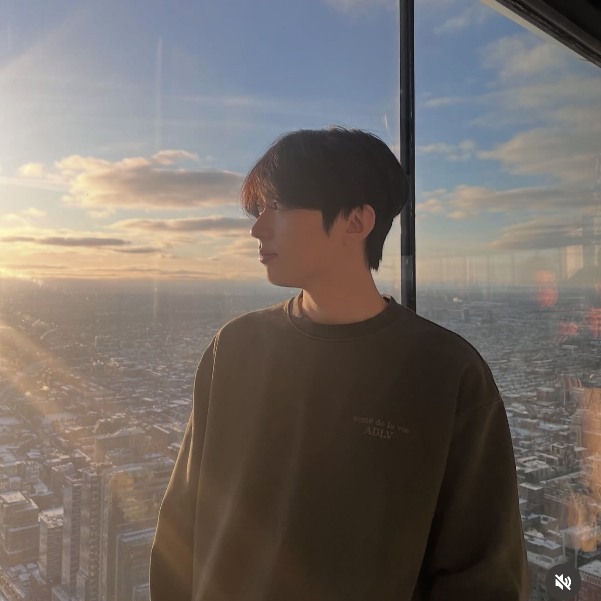

Woohyuk Song
Full Stack Developer
I am a soon-to-graduate student in Computer Programming and Analysis at George Brown Polytechnic, and I am currently seeking a full-time opportunity in the field of software development. I am eager to learn and grow in this industry, always excited to use my skills to make a positive impact in the world. I am a quick learner, and I am always looking for new challenges and opportunities to grow my skills and knowledge. Thank you for taking the time to explore my portfolio, and I look forward to connecting with you!

02 — Resume
Curriculum Vitae
Download PDFProfessional Experience
George Brown Polytechnic — Casa Loma, ON
- Conducted research on the application of AI in the context of business operations.
- Developed a chatbot using local Ollama models to answer user inquiries regarding websites.
- Implemented RAG to the chatbot to provide contextual responses to user queries.
docBraces Thornhill — Thornhill, ON
- Troubleshot and maintained specialized equipment, reducing downtime.
- Managed inventory systems for seamless day-to-day operations.
- Collaborated with healthcare professionals to ensure optimal patient care and safety.
ActionCIND — Remote
- Conducted literature reviews on neurological and immunological diseases.
- Summarized complex research into accessible content for awareness campaigns.
- Contributed to the development of educational materials for patients and caregivers.
Metadium — Pangyo, South Korea
- Proofread and authored articles related to blockchain technologies posted on medium.com on the behalf of the company.
- Conducted in-depth research on blockchain and cryptocurrencies.
- Participated in the company's community outreach programs and events.
Education
George Brown Polytechnic — Toronto, ON
- GPA: 3.97/4.00
- Data Structures & Algorithms, Web Development, Database Management, Software Engineering
University of Toronto, St. George Campus — Toronto, ON
- Graduated with Honours
- Majors: Human Biology, Ecology and Evolutionary Biology
- Minor: Immunology
Core Competencies
Soft Skills
Technical Skills
Languages
03 — Cover Letter
Letter of Introduction
Dear Principal Investigator,
As a soon-to-graduate student in Computer Programming and Analysis at George Brown Polytechnic, along with a solid background in biological sciences from the University of Toronto, I am excited to express my interest in applying for the posted position. After completing my biology degree, I chose to extend my education into technology to be able to better understand and utilize computational tools for data-driven problem-solving, connecting my foundations in science with technology. My familiarity with extensive scientific research and hands-on experience positions me in a place to contribute innovative and practical solutions.
In addition to the currently-taught curriculum where we used linear regression models incorporated with scikit-learn and created prediction-based datasets, other relevant experience regarding AI software development comes from my own studies and research, stemming from my own curiosity to learn more about topics such as feature mapping. However, I have worked extensively with Python and SQL specifically, as many of my earlier Python projects on GitHub use a Flask-based back-end. A more recent example is a budgeting tool I developed that demonstrates efficient data storage and uses API endpoints, which helped enhance my skills regarding server-side development and database management. In addition to the budgeting tool, many of my projects include Discord bots and interactive web tools that utilize Python, JavaScript and Node.js. During my years at George Brown Polytechnic, I have developed a level of proficiency in languages such as Java, Python, C#, web-based languages including HTML, JavaScript, its extensions like React and Node, along with back-end experience with SQL and other database technologies. I applied these skills to projects involving database management, web development, and program optimization, being attentive to detail and utilizing problem-solving skills in real-world tech workflows.
My experience in 2018 with Metadium was my first introduction to the technology industry, where I was exposed to the different scales of work within a professional technological setting. This is where I first learned and participated in the software development life cycle (SDLC), as well certain SCRUM principles. Through this summer intern experience, I was able to gain valuable insight into how the industry functions, which helped me understand the importance of taking the correct steps in the right order.
In leadership positions with the University of Toronto Korean Students’ Association, I orchestrated and oversaw events from start to finish, managed budgets, and mentored peers, developing strong communication skills and abilities that strengthen teamwork, both essential for collaborative environments. I am particularly drawn to organizations that prioritize innovation and practical solutions, which aligns with my background in technology, research, and analysis.
Thank you for considering my application. I am eager to contribute my skills and experience to your organization and look forward to the opportunity to discuss how I can support your team.
With gratitude and enthusiasm,
Woohyuk (Harry) Song
04 — Philosophy
Strength is the value and impact we can make on the world.
Every individual has the potential to make a meaningful impact on the world, but that potential is only realized through the choices we make and the actions we take. It takes will to make things happen, and grit to see them through. I am committed to acting with confidence and standing assured in what I can bring to the table; whether that is through my work in technology, my involvement in my community, or simply how I present myself to the world around me.
06 — Academic Record
Academic Report
- Dean's List: Fall 2023 - George Brown Polytechnic
- Dean's List: Winter 2024 - George Brown Polytechnic
- Dean's List: Fall 2024 - George Brown Polytechnic
- Dean's List: Winter 2025 - George Brown Polytechnic
- Dean's List: Fall 2025 - George Brown Polytechnic
07 — Academic Work
Academic Work Samples
COMP3133 · Full Stack Development II · 2025
GraphQL Employee Management API
A fully functional GraphQL API built with Node.js, Express, and Apollo Server for managing employee records. Implements queries and mutations for CRUD operations against a MongoDB database, with JWT-based authentication and structured resolver architecture.
COMP3132 · Machine Learning · 2025
Machine Learning Labs & Experiments
A collection of Jupyter Notebook labs exploring core machine learning concepts using Python. Covers supervised and unsupervised learning, model evaluation, data preprocessing, and visualization — demonstrating applied ML skills across real-world datasets.
COMP3133 · Full Stack Development II · 2025
Real-Time Chat Application
A full-stack real-time chat application built with Node.js, Express, and Socket.io, submitted as a lab test. Features user authentication, room-based and private messaging, typing indicators, online user tracking, and MongoDB persistence via Atlas.
08 — Capstone
GBC MART
Our solution for efficient, individually personalized grocery shopping.
GBCMart is a full-stack grocery e-commerce platform built by a four-person team as the capstone project at George Brown Polytechnic. The central problem we addressed is a frustration many Canadian shoppers share: grocery prices vary significantly across major retailers, yet there is no unified, user-friendly tool to compare those prices and manage a personal shopping list in one place. Our investigation asked whether a modern web application could aggregate multi-store product data, surface meaningful deals, and empower consumers to make cost-conscious purchasing decisions.
Grocery affordability is a pressing concern in Canada, where food inflation has consistently been clashing with wage growth. GBCMart addresses this by centralizing product and pricing data from multiple stores into a single platform, so that everyday shoppers looking to make use of their grocery budgets can find the best deals on food items. GBCMart aims to be more than a passive comparison between store items - to become an active planning tool, allowing shoppers to create and manage their own shopping lists.
09 — Professional Work
Selected Projects
Docubot — Privacy-First Local RAG-Capable Chatbot
A fully local, privacy-focused Retrieval-Augmented Generation chatbot that processes PDFs, images, and personal documents. Built with FastAPI, PostgreSQL + pgvector, and React. Supports multilingual Korean–English interactions, vision-based receipt processing via Qwen3-VL, and Dockerized deployment with no cloud dependency. Due to the sensitive nature of the data it handles, the source code is proprietary and available for demonstration on request.
Request a DemoVOD Review — Esports Collaboration Platform
A web-based video review platform created on request. Utilizes a custom annotation tool for esports teams, enabling real-time collaborative annotation, drawing, timeline markers, and highlight clipping directly on match footage. Built with Next.js, tRPC, Socket.io for live sync, Redis/BullMQ for job queues, and PostgreSQL with Prisma ORM. Developed for a private client — source code is proprietary; demo available on request with permission from the client.
Request a DemoDiscord Bot — Multi-Server Platform with Web Dashboard
A feature-rich Discord bot built with discord.js 14 and an Express-powered web dashboard, designed for Oracle Cloud deployment. Supports multi-server operation, JWT-authenticated sessions, SQLite database management, web scraping via Cheerio, and a full server migration utility for scaling across guilds.
Invite to Your Server반혜나 (banhannah) — Client Educational Platform
A production-ready educational platform built for a private client, featuring course management, user authentication, a file repository, video streaming via HLS, and a purchase and rating system. Built with Next.js 16, React 19, Prisma ORM, and SQLite, with NextAuth and bcrypt for secure authentication.
View Live Demo10 — Community Service
Community Commitment
June 2012 – August 2014
Youth TaeKwonDo Assistant Instructor
Sunny Kim's TaeKwonDo, Kerrisdale, BC
Coached weekly taekwondo sessions for youth aged 8–15 across two community centres, reaching roughly 20-40 kids per season. Helped plan and run lessons within the dojo, as well as helped organize and chaperone students for local tournaments and promotional testing events.
September 2018 – April 2021
Peer Tutor
University of Toronto
Provided one-on-one and small group tutoring in math and introductory science courses to undergraduate students on both drop-in and scheduled times. Assisted an average of 5 students per week and helped develop supplementary study materials used across multiple course sections in first and second year STEM courses.
March 2019 – June 2021
Chief Event Coordinator
UTKSA
Helped organize and run cultural events celebrating Korean heritage for the local community, including a yearly occuring event: REDPARTY, that draws over 1500 attendees. Coordinated volunteers, managed logistics for performances and vendor booths, and assisted with communications between the student body and external sponsors.
11 — References
Letters of Recommendation
Dr. Michael Sherman
Orthodontist
docBraces Thornhill
Available on Request12 — Recognition
Awards & Honors
Dean's List — Fall 2023
George Brown Polytechnic
Awarded to students who achieve a GPA of 3.5 or higher across all courses in a given semester with no failed or incomplete credits. Recognized for academic excellence in the Computer Programming and Analysis program.
View LetterDean's List — Winter 2024
George Brown Polytechnic
Second consecutive Dean's List recognition, maintaining a GPA of 3.5 or above with no failed or incomplete credits. Continued academic excellence in the Computer Programming and Analysis program.
View LetterDean's List — Fall 2024
George Brown Polytechnic
Third consecutive Dean's List recognition, maintaining a GPA of 3.5 or above with no failed or incomplete credits. Continued academic excellence in the Computer Programming and Analysis program.
View LetterDean's List — Winter 2025
George Brown Polytechnic
Fourth consecutive Dean's List recognition, maintaining a GPA of 3.5 or above with no failed or incomplete credits. Continued academic excellence in the Computer Programming and Analysis program.
View LetterDean's List — Fall 2025
George Brown Polytechnic
Fifth consecutive Dean's List recognition, maintaining a GPA of 3.5 or above with no failed or incomplete credits. Continued academic excellence in the Computer Programming and Analysis program.
View Letter